Selamat datang pada Codelabs kali ini kita akan belajar bagaimana cara membuat action pada google Assistant.
Apa yang akan kamu bikin?
Pengguna dapat memulai percakapan dengan secara eksplisit memanggil Aksi berdasarkan nama, yang kemudian merespons dengan pesan ucapan.
Setelah itu pengguna diminta untuk memberikan warna favorit mereka. Action kamu akan mem-parsing input pengguna untuk mengekstrak informasi yang dibutuhkan (yaitu, parameter warna).
Jika warna disediakan, Action akan memproses parameter warna untuk membuat "angka keberuntungan" secara otomatis untuk mengirim kembali ke pengguna dan percakapan berakhir.
Jika tidak ada warna yang disediakan, Action akan mengirimkan petunjuk tambahan kepada pengguna sampai parameter tersebut diekstraksi.
Pengguna dapat meninggalkan percakapan secara eksplisit kapan saja.
Apa yang akan kamu pelajari?
Memahami bagaimana Actions bekerja.
Bagaimana cara membuat projek di Actions Console.
Bagaimana membuat Dialogflow agent.
Bagaimana melakukan training Dialogflow.
Bagaimana cara Test Assistan pada Actions Console Simulator.
Bagaimana menggunakan Dialogflow slot-filling and system entities.
Bagaimana mengimplementasikan Action fulfillment menggunakan Action pada Google client library dan pada Dialogflow inline editor.
You can optionally get the full project code for this codelab from our GitHub repository.
Jadi, bagaimana cara kerja Action?
Untuk memulai percakapan, pengguna perlu menjalankan Tindakan Anda melalui Asisten. Pengguna mengatakan atau mengetik frasa seperti "Hai Google, bicara dengan Google IO 18". Ini memberitahu Asisten nama Action untuk diajak bicara. Dari titik ini dan seterusnya, pengguna berbicara dengan Tindakan Anda dan memberikannya masukan. Percakapan ini berlanjut sebagai dialog dua arah hingga tujuan pengguna terpenuhi atau percakapan telah selesai..
From this point onwards, the user is talking to your Action and giving it input. This conversation continues as a two-way dialog until the user's intent is fulfilled or the conversation is finished.
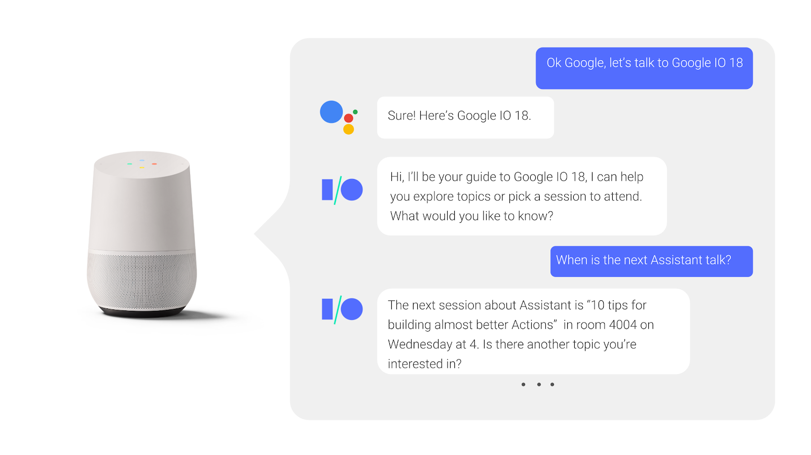
Mari kita lihat apa yang terjadi di balik layar selama percakapan:
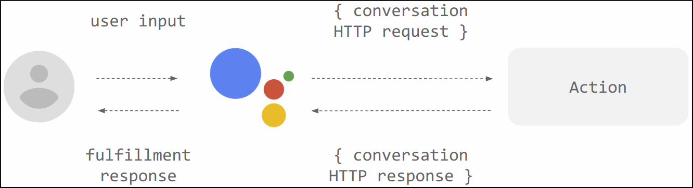
Action Anda sepenuhnya dijalankan di awan, bahkan ketika pengguna berbicara dengan mereka di ponsel, perangkat rumah pintar, atau jam tangan mereka.
Setiap Tindakan mendukung maksud tertentu dan memiliki pemenuhan yang sesuai yang memproses maksud tersebut.
Perangkat pengguna mengirimkan ucapan pengguna ke Asisten Google, yang mengarahkannya ke layanan pemenuhan Anda melalui permintaan HTTP POST..
Pemenuhan Anda menghasilkan respons yang relevan dan mengirimkannya kembali ke Asisten, yang akhirnya mengembalikannya kepada pengguna.
Anda membuat action dengan membuat sebuah Action project dan mendefinifinisakknya dengan dua hal untuk setiap action : intent and the fulfillment.
Bagian codelab ini menjelaskan bagaimana Anda mengatur proyek Tindakan Anda di Actions Console.
Mengecek izin pengaturan Google
Untuk menguji Tindakan yang akan Anda buat untuk codelab ini, Anda perlu mengaktifkan izin yang diperlukan.
Ketikan pada Project name, seperti "actions-codelab".
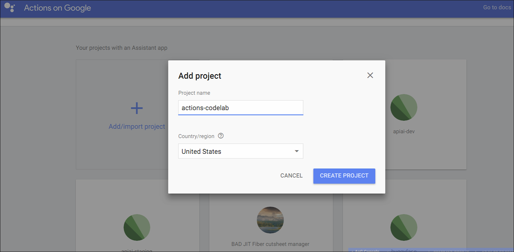
Click Create Project.
click Skip Pada kanan halaman
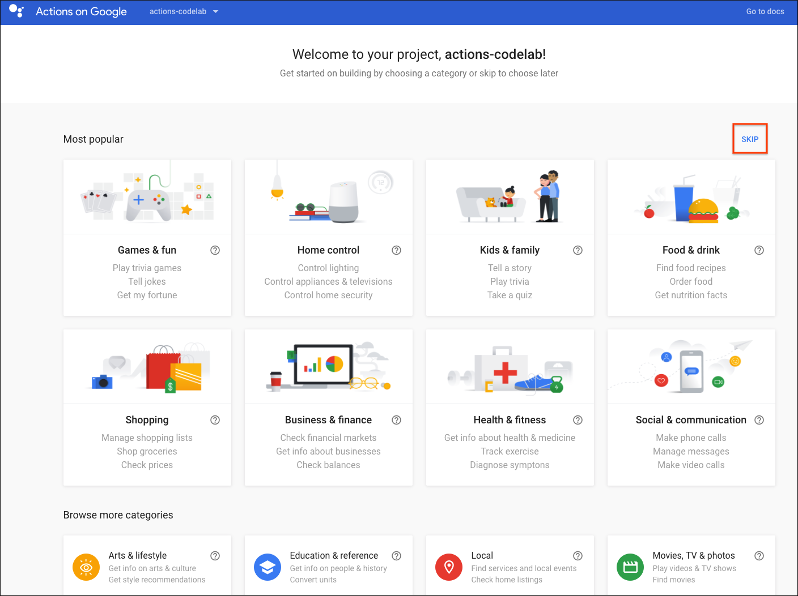
Click Build > Actions pada kiri navigasi.
Click Add first Action mu.
Memilih paling tidak 1 bahasa , untuk kali ini rekomendasi memakai bahasa inggris
pada Custom intent card, click Build. Akan membuka Dialogflow Console pada tab baru.
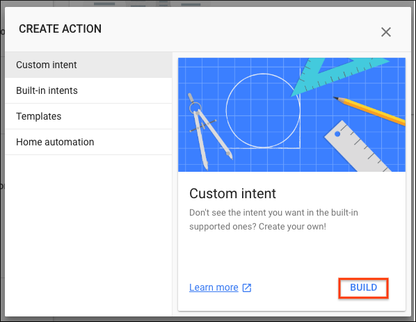
Bagaimana Action bekerja dengan dialogflow
Anda mungkin bertanya-tanya bagaimana Asisten mem-parsing makna semantik input pengguna (seperti ucapan lisan). Ini dilakukan melalui pemahaman bahasa alami (NLU), yang memungkinkan perangkat lunak Google untuk mengenali kata-kata dalam ucapan.
Untuk Tindakan Anda sendiri, Google menyediakan layanan yang disebut Dialogflow untuk membiarkan Anda menangani NLU dengan mudah. Dialogflow menyederhanakan tugas memahami masukan pengguna, mengekstraksi kata kunci dan frasa dari masukan, dan mengembalikan tanggapan. Anda menentukan bagaimana semua ini bekerja dalam agen Dialogflow.
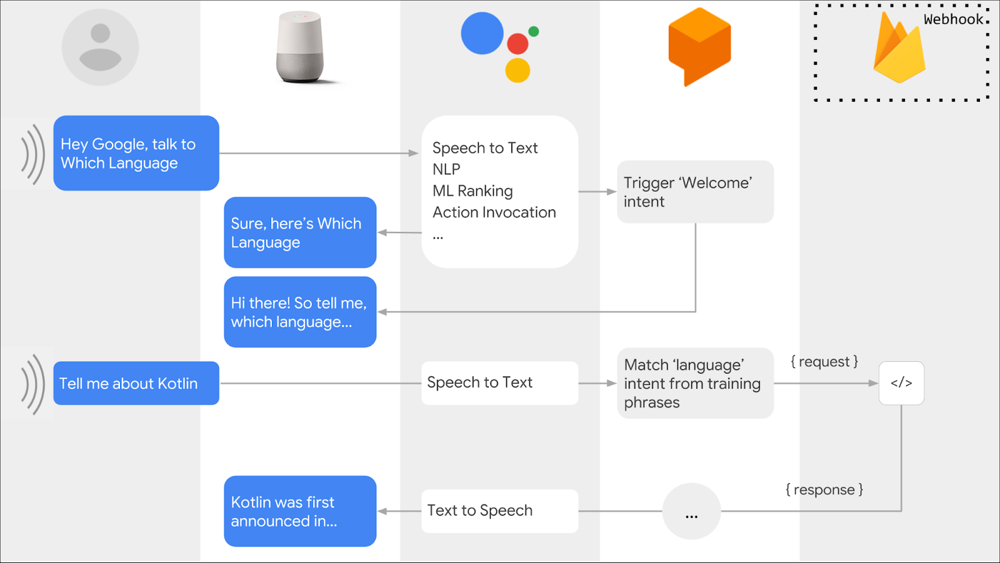
Create a Dialogflow agent
Sekarang setelah Anda membangun proyek Tindakan Anda, buat agen Dialogflow dan kaitkan dengan proyek Anda:
Setelah mengikuti langkah-langkah di atas, Anda seharusnya sudah berada di Dialogflow Console dengan nama proyek Tindakan Anda di bagian atas. Anda mungkin perlu mengotorisasi Dialogflow untuk menggunakan akun Google Anda, dan menerima Ketentuan Layanan.
Click Create.
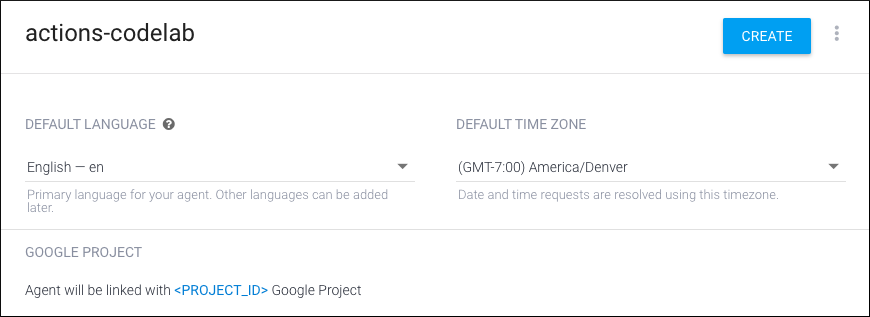
Jika penciptaan agen berhasil, Anda akan berada di halaman Intents. Anda sekarang dapat mulai menyesuaikan bagaimana agen Dialogflow Anda menanggapi permintaan pengguna.
Membuat welcome intent
Setiap proyek Tindakan harus memiliki maksud selamat datang yang bertindak sebagai titik masuk bagi pengguna untuk memulai percakapan. Sambutan selamat datang dipicu saat pengguna secara eksplisit memanggil suatu Tindakan dengan mengucapkan namanya.
Secara default adalah "Hey Google, talk to my test app".
Hapus semua response teks lainnya dengan mengklik ikon tempat sampah di samping masing-masing..
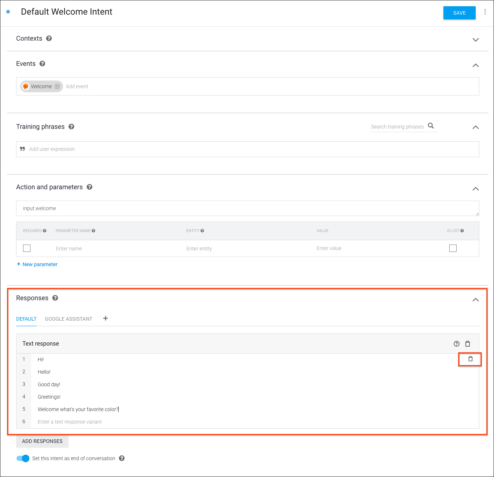
dibawah Responses , click Enter text response ketik "Welcome! What is your favorite color?"
s
Click Save. "Intent saved"
Test welcome intent
Actions Console menyediakan antarmuka web untuk pengujian yang disebut simulator. Antarmuka ini memungkinkan Anda mensimulasikan perangkat keras dan pengaturannya. Anda juga dapat mengakses informasi debug seperti permintaan dan respons yang diterima dan dikirim oleh penerimaan Anda.
Untuk menguji Aksi Anda di simulator konsol Tindakan:
Pada Dialogflow Console pada sebelah kiri klikIntegrations. kemudian klik Google Assistant > Integration Settings.
Kemudian Klik Test
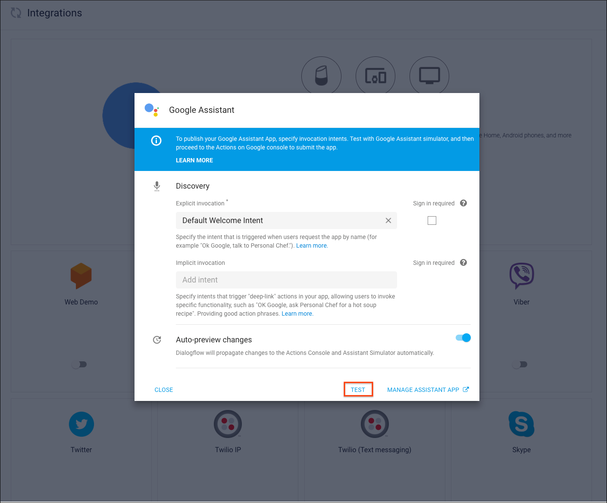
ketik "Talk to my test app"kedalam Input kemudian tekan enter.
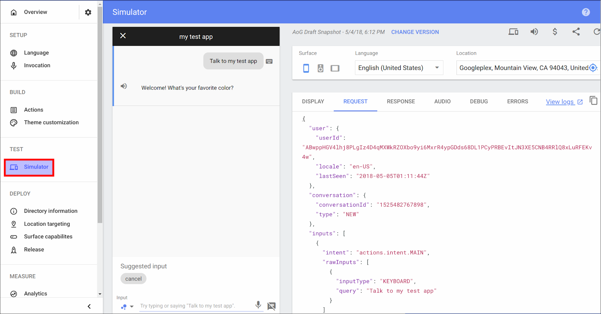
Codelab selanjutnya adalah membuat dinamis conversation.
Membuat Dialogflow intent
Langkah-langkah:
Pada Dialogflow Console, tutup halaman pengaturan integrasi Asisten Google jika Anda telah membukanya. Di navigasi sebelah kiri, klik Intents lalu klik Create Intent. Intents then click on Create Intent.
Di bidang nama maksud di bagian atas, ketik "favorite color" sebagai nama maksud baru Anda. Klik Save.
Dibawah Training frase,tambahkan ekspresi pengguna berikut dengan mengetikkan frasa di bawah lalu mengklik Enter pada keyboard:
"purple is my favorite"
"black is my favorite color"
"i love yellow"
"Pink"
"my favorite color is green"
dibawah Action and parameters, buat teks cepat untuk menanyakan warna favorit kepada pengguna. Anda harus melihat garis dengan "color" dalam Parameter Name field.Entri parameter ini secara otomatis dibuat oleh Dialogflow karena ia mampu membuat anotasi otomatis kata dan frasa yang dikenali sebagai entitas dalam frasa pelatihan. Pada baris itu:
Check the Required box.
Click Define prompts...
Enter "What's your favorite color?" as a prompt.
Click Close.
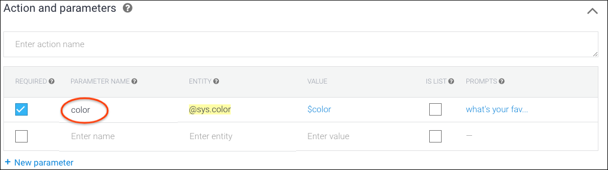
Dibawah dari Fulfillment bagian di halaman ini (bukan navigasi kiri), click Enable Fulfillment. Anda mungkin perlu memperluas bagian dengan mengklik panah menunjuk ke bawah..
Turn on Enable webhook call for this intent.
Click Save.
Setelah Anda menyelesaikan langkah-langkah ini, Dialogflow akan secara otomatis mengekstrak parameter yang dikenali dari ucapan pengguna yang memicu maksud ini; dalam hal ini, parameter warna. Setelah memperoleh informasi ini, Dialogflow membuatnya tersedia untuk Fulfillment Anda
Di bagian ini, kami akan memandu Anda melalui langkah-langkah menerapkan webhook Dialogflow yang berisi logika untuk membuat respons percakapan. Anda juga dapat mencoba Aksi Anda secara real-time dengan menggunakan simulator Actions Console.
Build your webhook
Kita kan menggunakan dialogflow console Inline Editor to build and deploy the webhook. Dengan langkah :
'use strict';
// Import the Dialogflow module from the Actions on Google client library.
const {dialogflow} = require('actions-on-google');
// Import the firebase-functions package for deployment.
const functions = require('firebase-functions');
// Instantiate the Dialogflow client.
const app = dialogflow({debug: true});
// Handle the Dialogflow intent named 'favorite color'.
// The intent collects a parameter named 'color'.
app.intent('favorite color', (conv, {color}) => {
const luckyNumber = color.length;
// Respond with the user's lucky number and end the conversation.
conv.close('Your lucky number is ' + luckyNumber);
});
// Set the DialogflowApp object to handle the HTTPS POST request.
exports.dialogflowFirebaseFulfillment = functions.https.onRequest(app);
Click Deploy. You'll need to wait on this page a couple minutes for Dialogflow to provision and deploy your webhook code. When the code is successfully deployed, you'll see an updated "Last deployed" timestamp next to the Deploy button.
ketik "Talk to my test app" kedalam Input dan tekan enter.
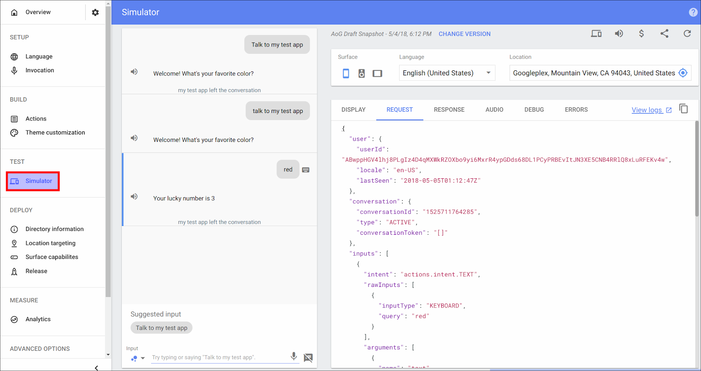
Simulator kemudian akan melakukan pemanggilan eksplisit dengan memanggil niat selamat datang Anda. Setelah percakapan di tengah, Anda dapat memicu niat khusus favorit warna dengan memberikan warna. Misalnya, coba pengujian dengan frasa berikut:
"Red"
"I love green."
"My favorite is pink."
Selamat anda telah selesai mengikuti codelan kali ini berikut ini adalah materi yang kita pelajari.
SELAMAT
Anda sekarang tahu dasar-dasar membangun antarmuka pengguna percakapan dengan Action Assistant di Google.
Apa selanjutnya ?
Pada next codelab, kamu akan lebih banyak belajar tentang google assistant
Kamu juga bisa ekplorasi materi tentang Actions on Google: